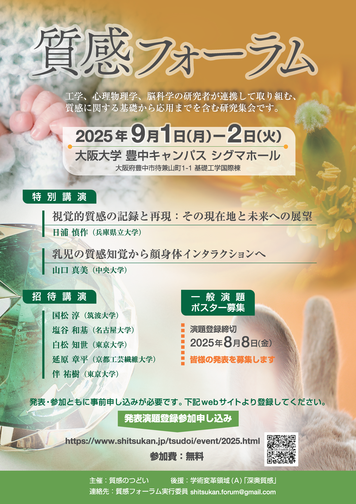

イベント
2025年度イベント（質感フォーラム）
| 日時 | 2025年9月1日（月）～2日（火） |
|---|---|
| 会場 | 大阪大学（豊中キャンパス）シグマホール link |
| フライヤー |  クリックでpdf表示 |
プログラム
9月1日（月）
12:00~ 受付開始
13:00~13:10 開会の辞
13:10~14:00 特別講演１ 日浦 慎作（兵庫県立大学）
演題：「視覚的質感の記録と再現：その現在地と未来への展望」
14:00~14:15 休憩
14:15~14:45 招待講演１ 伴 祐樹 （東京大学）
演題：「残効の仮想的な提示による知覚刺激強度の増強」
14:45~16:30 ポスター発表
16:30~17:00 招待講演2 白松 知世（東京大学）
演題：「知覚を支える大脳皮質の情報伝達経路とその調整」
17:00~17:30 招待講演3 国松 淳 （筑波大学）
演題：「呼吸と深奥質感の関係について」
17:30~17:35 1日目・閉会の辞
18:00~20:00 懇親会
9月2日（火）
10:00~10:05 2日目・開会の辞
10:05~12:00 ポスター発表
13:00~13:30 招待講演４ 塩谷 和基（名古屋大学）
演題：「風味という質感を生み出す脳内神経回路機構」
13:30~14:00 招待講演５ 延原 章平（京都工芸繊維大学）
演題：「複数人物・動物の全自動マーカーレスモーションキャプチャ」
14:00~14:10 休憩
14:10~15:00 特別講演２ 山口 真美（中央大学）
演題：「乳児の質感知覚から顔身体インタラクションへ」
15:00~15:30 総合討論・閉会の辞
参加・発表申し込みについて
参加費：無料
一般からの発表（ポスター発表またはデモ展示）を受け付けます
※会場の大きさには限りがありますので、申込み多数の場合には発表数を制限することがあります
参加・発表申し込みサイト：こちら
ポスター発表プログラム (2025/08/20 NEW!)
こちらからご覧ください -> ポスター発表プログラム
ポスター発表要項
ポスターパネルサイズ（縦長）：掲示面90×153cm、全体の大きさ97×180cm
各発表にコアタイム（発表義務時間）は設けていません
懇親会
会場：福利会館3階
会費：5,000円
実行委員
岩井 大輔（大阪大学）
川嵜 圭祐（新潟大学）
鯉田 孝和（豊橋技術科学大学）
澤山 正貴（北海道大学）
田中 緑（千葉大学）
渡辺 義浩（東京科学大学）